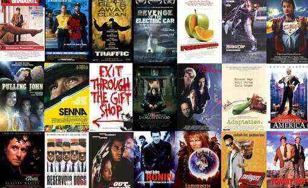
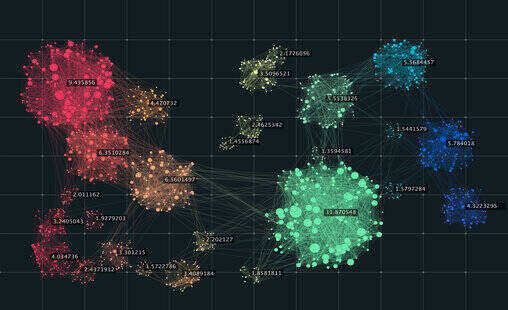
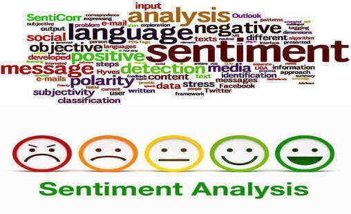

This project consists of a dashboard created using Power BI, and designed to visually showcase the healthcare system differences between the subjects stated above. It also includes Descriptive, Correlation, Regression, Time Series, and Comaprative statistical analyses written in R.
{view project codes}
This report uses data gotten from the UK police repository and the UK Office for National Statistics to provide insights into street level crimes in Greater Manchester. The codes are written in SQL and the visuals displayed using Power BI.
{view project codes}

This project designs a system that predicts and recommends movies to a user, based on the user and other users' past choices and behaviours using association rules mining written in Python.
{view project codes}
This project uses classification algorithm to automatically classify webpages into either phishing or legitimate websites using k-Nearest Neighbours and Neural Networks classification algorithm written in Python.
{view project codes}

This project is an unsupervised learning model which seeks to automatically group students into their respective knowledge levels based on their attributes. It uses the K-Means and Hierarchical clustering algorithm and is written in Python.
{view project codes}

This project uses Sentiment Analysis in Natural Language Processing to get insights from text reviews written by tourists, about hotels & restaurants in various locations (narrowed to beach locations) in Thailand. It is written entirely in python.
{view project codes}